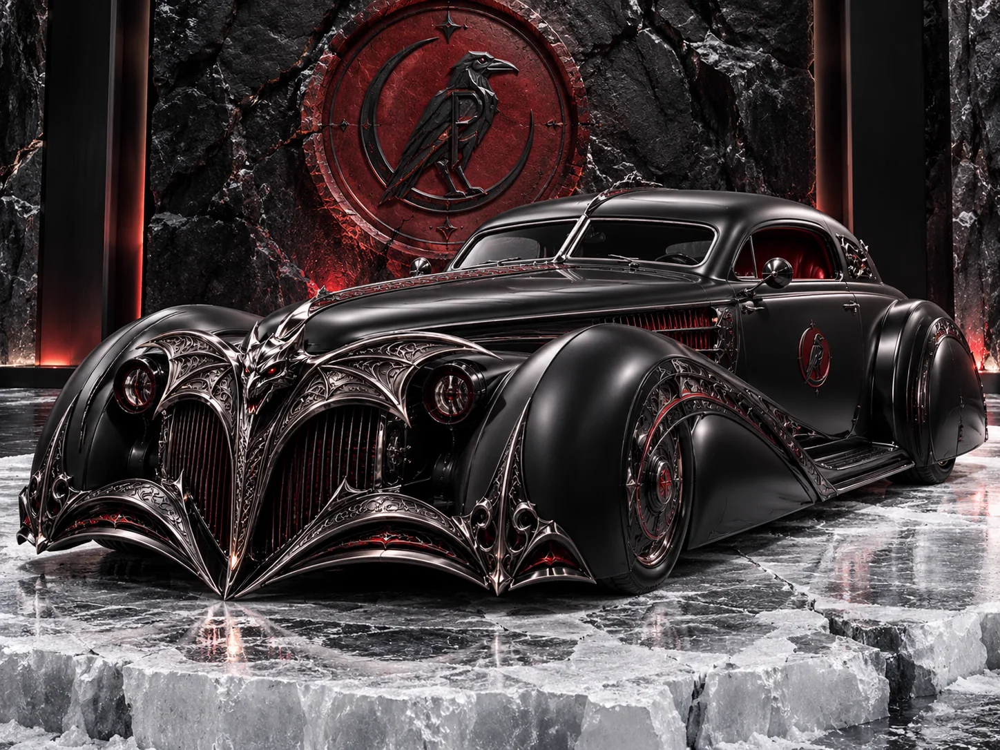
No. I / VIII
Cathédrale
1934 · Grand coupé
Its grille was traced from the rose window of a burned chapel.
- Engine
- V16 · 7.4 L
- Body
- Pierced chrome tracery
- Finish
- Nocturne black, garnet leather
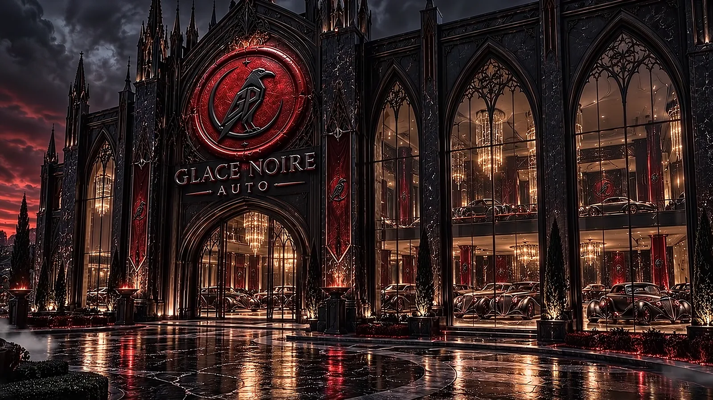
COACHWORKS & SHOWROOM · BY APPOINTMENT
We do not build cars. We summon them. Each one is drawn in shadow, struck in fire and quenched in black ice, until nothing remains but the line.

No. I / VIII
1934 · Grand coupé
Its grille was traced from the rose window of a burned chapel.
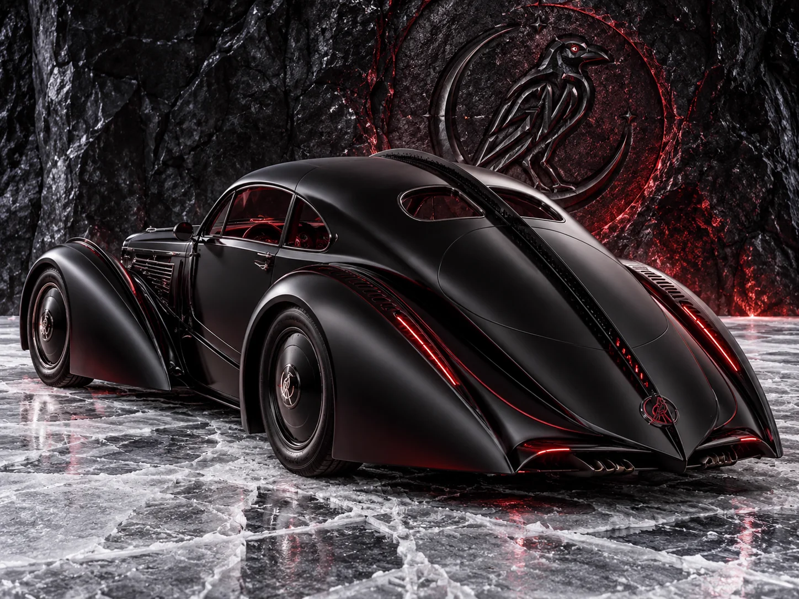
No. II / VIII
1936 · Fastback
Drawn to be seen from behind. That is how its rivals know it.
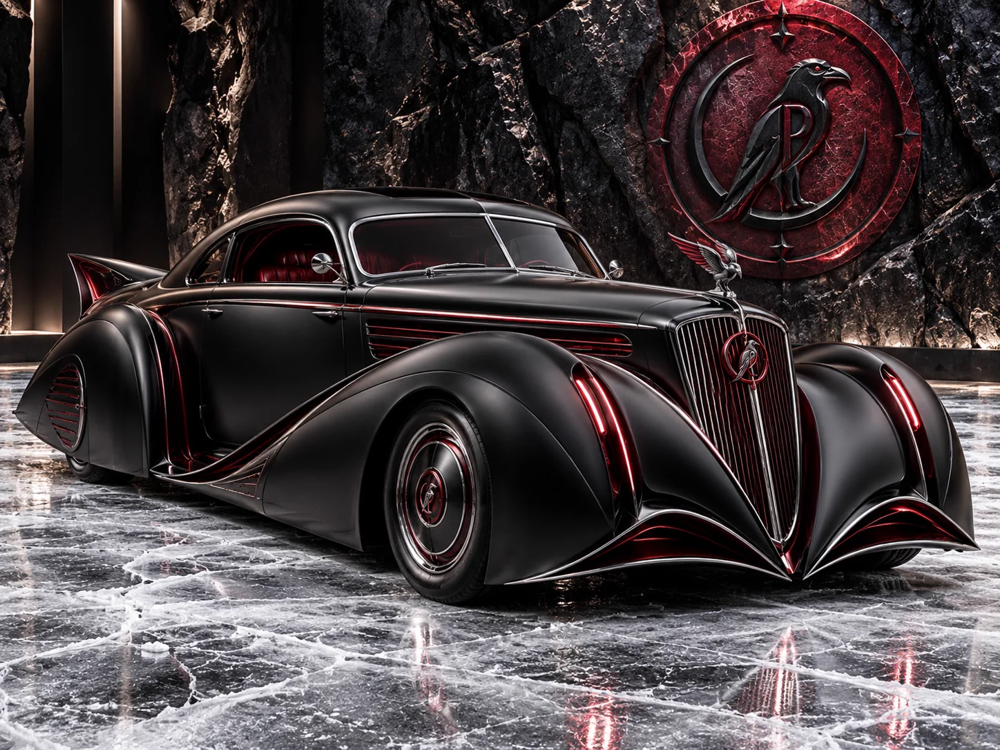
No. III / VIII
1937 · Aérodyne coupé
The raven on the bonnet watches the road, so the driver never has to.
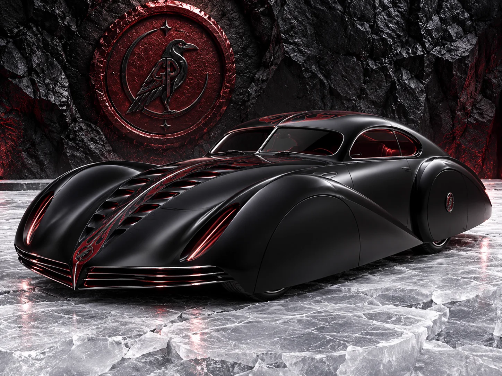
No. IV / VIII
1938 · Teardrop coupé
It leaves a wake of cold air and a single red line.
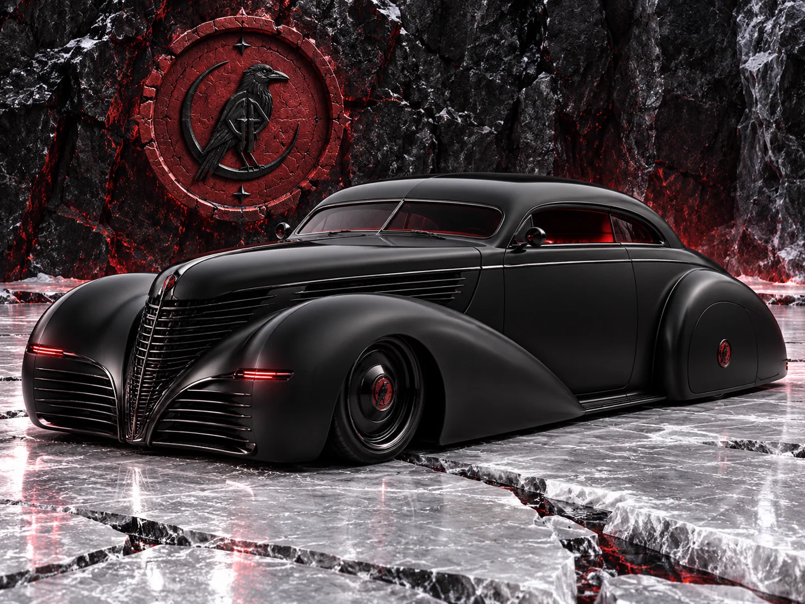
No. V / VIII
1939 · Chopped coupé
Mourning black, nothing more. The quietest car in the house, and the most feared.
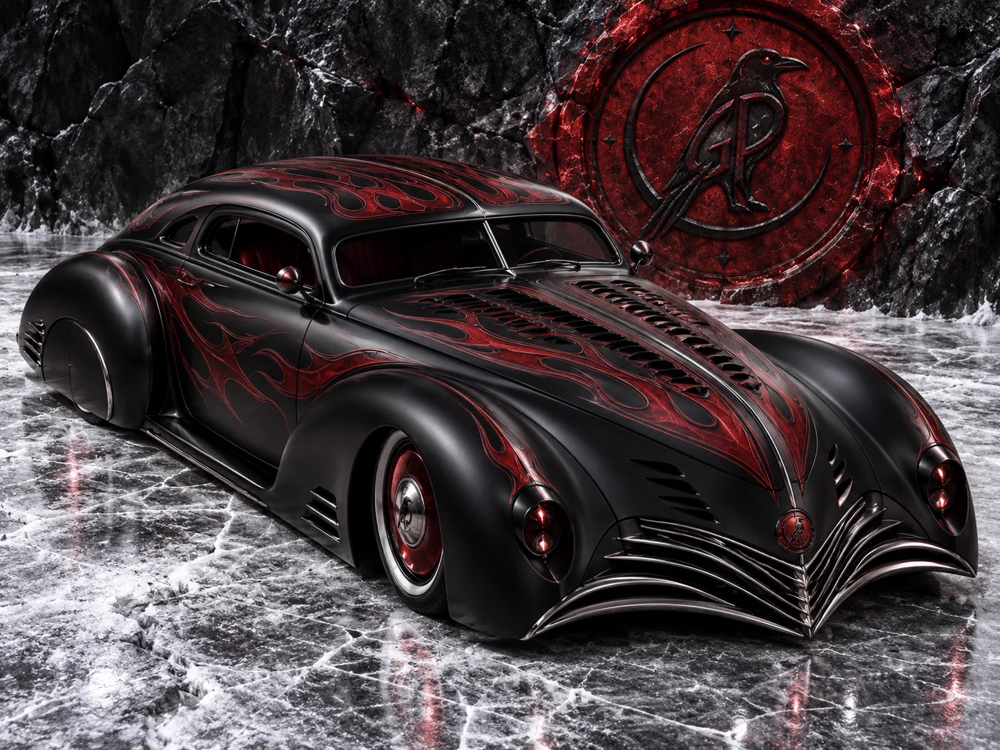
No. VI / VIII
1949 · Custom coupé
Embers under the lacquer. Hand-laid flames, forty coats deep.
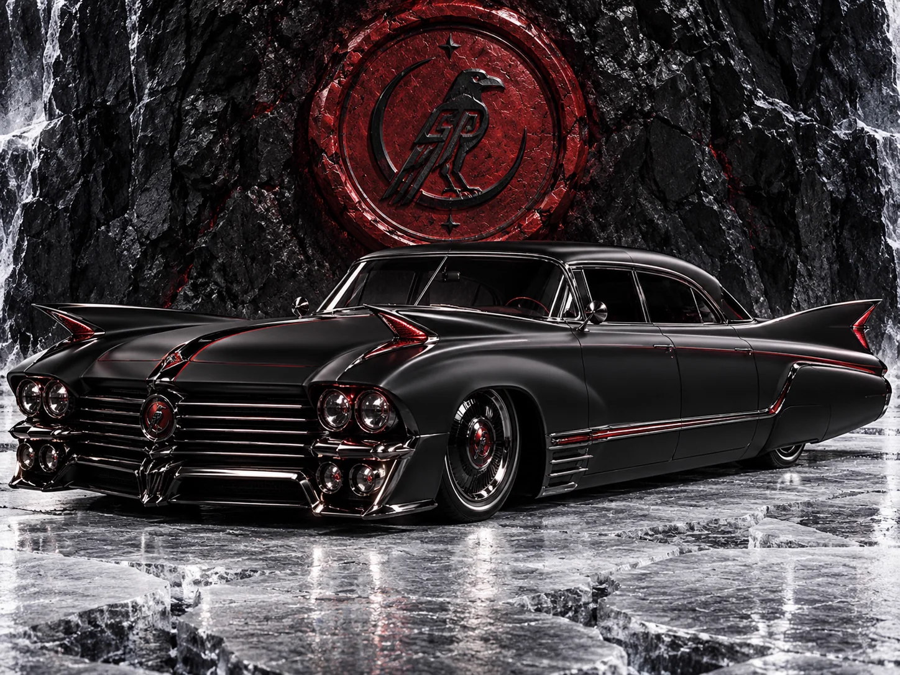
No. VII / VIII
1959 · Limousine
A limousine for the last ride of the night.
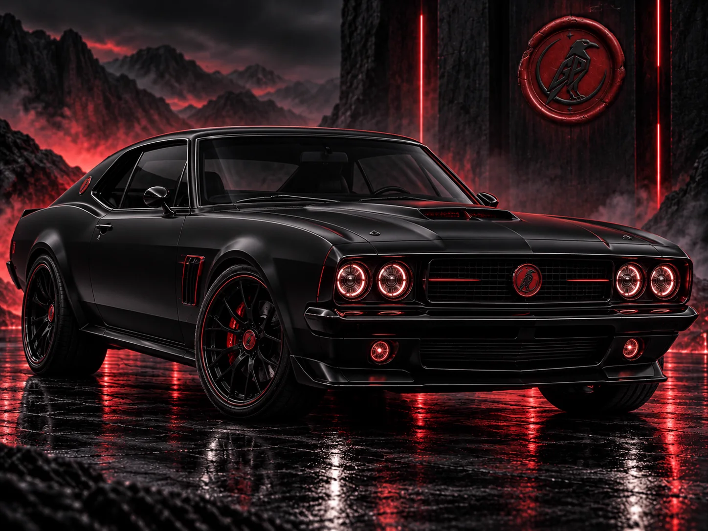
No. VIII / VIII
1969 · Muscle coupé
The youngest blood in the house, and the loudest.
DOORS OPEN AT NIGHTFALL
Behind the gothic glass, the collection rests under crystal and candle. The fountains are kept just above freezing, and the floor is polished until the cars stand on their own reflections. No two visits show the same cars in the same light.
Viewing by appointment only.
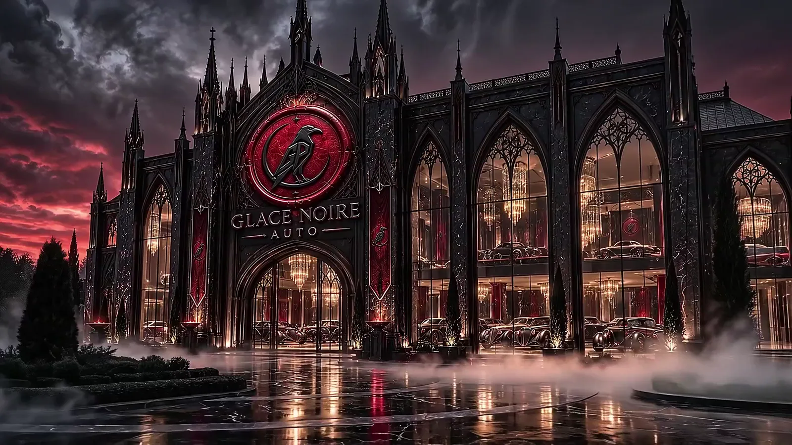
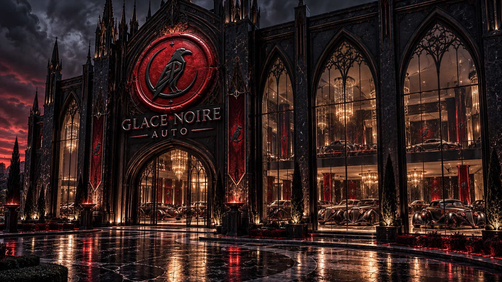
Every car begins as charcoal on black paper, lit from one side, so that only the light can draw the line.
Panels are hand-beaten over oak bucks, then lacquered in up to forty coats, each rubbed back by hand.
The finish cures for nine nights in a cold room at −30 °C, until it sets as deep and still as black ice.
Select an image to see it in full.
BY APPOINTMENT ONLY